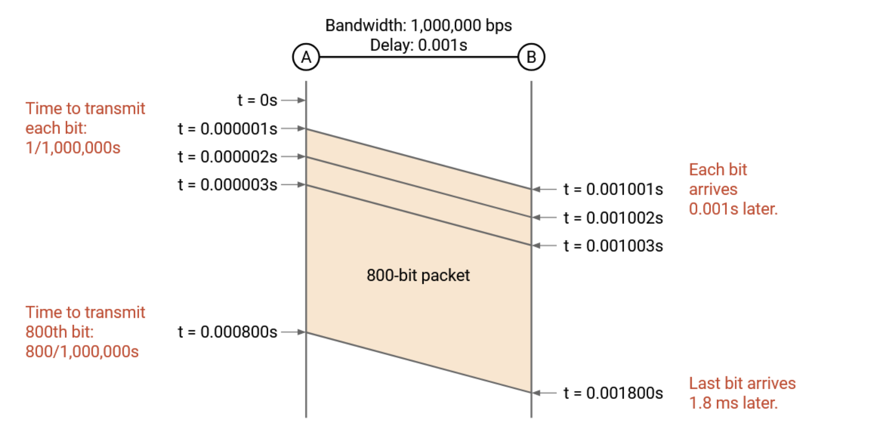

Back to Thai Tea
Channel 20
Internet Architecture
October 14th, 2024 (New!)
Still going at it.
- Chapter 2 Review: Router Hardware
- Colocation Facilities/Carrier Hotels: Buildings where ISPs install routers to connect with each other.
- Line Rate: Speed or bandwidth of a physical port.
- Size of router: physical size, or maybe number of physical ports, or maybe total bandwidth.
- Line Card: A bunch of physical ports together.
- Chassis: Physical shelf that makes up the router.
- Three Planes of the Hardware and Software Components of a Router:
- Data Plane: Forwards da packets. Used when we need to forward da packets.
- Control Plane: Communicates with other routers and runs routing protocols. Used when the forwarding table has to be updated bc of a topology change.
- Management Plane: Tell routers what to do and monitor them.
- Data Plane is optimized for more simple tasks like looking up in the table and forwarding.
- Control Plane is optimzied for more complex tasks like recomputing paths in the network.
- Data and Control planes operate on scales of nanoseconds while Management plane operators on orders of hundreds of seconds.
- Network Management System (NMS): Software which is exactly what it sounds like. Computes network configuration and applies to router. Allows telemetry to be read from routers.
- Images from textbook:


- User packet: data from an end host, forwarded as follows:

- Control-plane traffic: info for the router itself, forwarded as follows:

- Punt traffic: User packets that need a bit more special processing, like user packets with a TTL of 1.
- We need specialized router hardware because the speeds needed for scaling aren't achievable with just a regular computer and software. Simple operations are able to be done in hardware on forwarding chips, others need to be punted to controller cards.
- PHY part of linecard: handles Layer 1 functionality, decoding signal into bits.
- MAC part of linecard: handles link layer (Layer 2) functionality.
- We can use a trie to handle efficient forwarding table lookup.
- Chapter 2 Review: Inter-Domain Routing
- Autonomous Systems (ASes): One or more local networks all run by the same operator.
- Inter-domain Topology/AS Graph: Graph without all the local details.
- Stub AS: Solely exists to give internet to hosts in its local networks.
- Transit AS: Forwards transit on behalf of other ASes.
- Roles for AS: customer, provider, peer.
- Stub ASes are customers. Transit ASes are providers.
- Tier 1 ASes: No incoming edges in the AS graph, all having peer connections between each other. They have to be peering with each other, which is why the internet is connected.
- Gao-Rexford Rules:
- When there are multiple options, AS prefers to send to most profitable next hop, or to next hop which is a peer.
- ASes only carry traffic if they're getting paid for it.
- Routes are valley-free.
- ASes want autonomy and privacy.
October 13th, 2024 (New!)
Still preparing for my midterm, but the clock has decided to change the day on me.
- Chapter 2 Review: Addressing
- IP Adresses are unique addresses that identify a host. They aren't static, and can change when you change locations.
- Hierarchical Addressing: Label nodes with a number in the front representing which LAN it is from, so that in the address table, for other LANs, we just keep one entry for each LAN which is not the LAN we are in. Side benefit: makes tables more stable.
- Hosts have a network ID and a host ID, so that network IDs matter more to inter-domain protocols and host IDs matter more to intra-domain protocols.
- Instead of just keeping just one entry for each LAN, we can even have one entry for ranges of LANs! Or, we can have a default entry that says something like: "for all other entries which are not above, forward to R3".
- Early Addressing Approach: 8 bit network ID and 24 bit host ID, but this isn't efficient because different LANs and overall networks need different numbers of bits for networks and hosts.
- Classful Addressing: different network sizes based on needs, split into Class A, Class B, and Class C. By 1994 though we were running out of Class B networks. This method is now obsolete.
- Classless Inter-Domain Routing (CIDR): Allocate a certain number of network/host bits depending on how many hosts the entity needs.
- ICANN --> RIRs --> Large Organizations and ISPs (Local Internet Registeries) --> Hosts or Small Organizations
- Dotted Quad Representation: Breaking our 32 bit IP addresses into 4 groups of 8 bits.
- Slash Notation: Use slashes to denote a range of addresses. Write fixed prefix, zeros for unfixed bits, and write number of fixed bits after slash. For example, 192.0.0.0/8 would mean the 192 part is fixed and the other parts are not. Default route is written 0.0.0.0/0, and fixed routes might be like 10.41.157.75/32 (the IP I'm writing this from).
- Netmask: A bitmask for which bits of the IP are fixed.
- If an address is in two ranges, use longest prefix matching, which means we use the most specific range that matches our address.
- IPv6: Written in hex rather than decimal of the form of 8 hex strings each 4 characters long, separated by colons, and we can omit long strings of zeros. We can also still use slash notation and such.
October 12th, 2024 (New!)
Right now, I'm preparing for the midterm from the CS 168 textbook. (Teleport!). Here are some of my notes:
- Chapter 1 Review: Network Architecture
- Narrow Waist: In high layers, we want to have a variety of protocols that can deal with different applications and problems, like websites or system clocks, and in low layers, we want to have a variety of protocols to deal with different hardware, but in the middle we should have a very small number of protocols so everyone in higher layers can implement the same thing. For internet, this is middle piece is Layer 3, where there is just one internet protocol, IP.
- Demultiplexing: To demultiplex, we wrap our protocols layer by layer, and each layer tells us what the next inner-most layer's protocol will be.
- Remark: physical ports (holes you plug cables into) are different than logical ports (the numbers in Layer 4 protocols) and they don't correspond.
- Socket: A way an OS can connect an application to the network stack in the OS.
- If we implemented reliability into the network and something went wrong, hosts couldn't do anything about it. Instead, the internet uses end-to-end implementations for reliability to force hosts to take responsibility for reliability. Hosts now have power over ensuring reliability. With great power comes great responsibility.
- Chapter 1 Review: Resource Sharing
- Statistical Multiplexing: Dynamically allocating resources based on need rather than giving fixed resources to everyone at all times.
- Best Effort: Have users send data to the network with no guarantees of having enough bandwidth to meet demand.
- Designed with packet switching: Switches don't think about flows or reservations and just send packets independently of each other to next node.
- Implemented with no coordination between packets or switches.
- Reservations: Users explicitely request and reserve bandwidth they need.
- Designed with circuit switching: End host finds path of switches to destination end host, and then makes a special reservation through the network through these switches.
- Evaluating Design Tradeoffs:
- Is this a good abstraction (or API) for the network to offer to an application developer?
- Circuit switching is better here, because it offers more a more reliable abstraction to the user, and also makes it easier for operators because they can just look at how much bandwidth each user is requesting and charge them that much money, whereas if you don't know if you'll actually be able to allocate that bandwidth, you can't be sure how much to charge.
- Is the approach efficient at scale? Does the approach use all the available bandwidth on the network, or is some bandwidth wasted?
- Packet switching is more efficient here, because data might not be sent at a constant rate, so users might not be using all of their bandwidth at all times. Circuit switching also has the added time of finding and setting up a circuit.
- How well does each approach handle failure at scale?
- If something fails, router just chooses a new path in packet switching. In circuit switching, router gives that responsibility to the user, so it just has to cancel everything if a fail happens.
- How complex is it to implement each approach at scale?
- Lot's of problems along the way, like checking the success of a reservation, how to know if a reservation was accidentally dropped, the confirmation is dropped, whether or not to try again if a reservation is declined, etc..
- In summary, in many cases involving individual and human users, we prefer packet switching. Sometimes, larger corporations might prefer circuit switching, however, if they expect more smooth bandwidth demands, want to guarantee reliability, and other things.
- Nowadays, users and developers have also adapted to the cons of packet switching! Technology influences user behavior.
- Chapter 1 Review: Links
- Bandwidth: How many bits can be sent per unit of time (speed, width of pipe). Measured in bits per second.
- Propagation Delay: How long it takes bit to travel along link (length of link/pipe). Measured in time (seconds). In the context of links, same as latency.
- Bandwidth-Delay Product (BDP): $\text{Bandwidth} \times \text{Propagation}$, capacity.
- Here is a very nice graphic to show how propagation delay is computed from the textbook:

- Transient Overload: In the long run, we will have enough capacity to send outgoing packets, but in the moment, we are overloaded. Solution: Maintain a queue of packets. At each time, choose to send an incoming packet or one from the queue. Choice determined by packet scheduling algorithm.
- Persistant Overload: Exactly what it sounds like. Queue fills up so quickly we're forced to drop packets. If an operator notices persistant overload, they need to manually upgrade the link, or tell senders to slow down.
- Chapter 2 Review: Link-State Protocols
- Link-state protocols give nodes global information and ask them to individually compute the solution.
- From the textbook: "Link-state protocols in one sentence: Every router learns the full network graph, and then runs shortest-paths on the graph to populate the forwarding table."
- Choices for shortest-path algorithm: Bellman-Ford, Dijkstra, or maybe alternate options, for example things that might run well in parallel.
- Potential Issues and Resolutions:
- ISSUE: If Router A computes the shortest route to be through Router B and Router B computes the shortest route to be through Router A, we'll get a routing loop!
FIX: Ensure Router's produce compatible results. We'll require:
- all routers to agree on the network topology,
- all routers find least-cost paths,
- all costs are positive,
- all routers to use the same tie-breaking rules.
- Learning Graph Topology: We do this via flooding, where we
- first, learn your own neighbors,
- then, tell everyone else (flood) who your neighbors are,
- and if anything changes, flood that as well.
- Potential Issues and Resolutions:
- ISSUE: If Router A broadcasts to B that two routers are neighbors, and then B broadcsts that back to A, and so on, we get infinite flooding. This also happens if we have a network loop.
FIX: Ensure we don't send the same information twice. Write down the information the first time and the second time don't send it again. can also introduce a timestamp to make the message more unique and identifiable.
- Link state does converge, and routing state then remains same until network topology change.
- Lot's of details and complexity in those details with link-state protocol. Basically in my opinion it's a pain.
- Comparison between Distance-Vector and Link-State:
- Distance-Vector puts more trust on the nearby nodes to get the right path right, whereas in Link-State we have the information.
- Distance-Vector could be slower to converge based on implementation.
- Link-State protocols better for small-scale systems but don't scale well to global internet. Some operators might not want to reveal their network topology so that makes link-state harder.
- Networks usually use a combination of both Distance-Vector and Link-State protocols.
October 2, 2024
Today I'm studying and trying to implement a distance-vector protocol. Here are some notes from the CS 168 textbook (Teleport!).
- Distance-vector protocol is one of three, others being link-state and path-vector protocols.
- Steps in the protocol:
- Hosts should introduce themselves to their adjacent routers.
- Every time a router learns of a host $A$,
- The router adds the information about $A$ to its forwarding table.
- The router sends information about $A$ to all adjacent routers.
- In this protocol, routing announcements (basically a router saying that it can reach a host) propagate outwards away from the host and forwarding propagates inwards towards the host.
- Potential Issues and Resolutions:
- ISSUE: Multiple paths from a router to a host, so a router recives information about $A$ multiple times.
FIX: Bellman-Ford Updates: Update based on minimal cost! If at any point we recieve information about $A$ having a smaller cost from this router, update your forwarding table!
-
ISSUE: Network topology can change, so if a cost gets increased, we may be cooked.
FIX: Next-Hop Rule: We accept worse costs if they come from the same router that is already in our forwarding table. This may produce inefficiencies if a path suddenly gets much worse since we will have forgotten about the next best path which might now be better. However, the steady state will be optimal, so running the protocol again will end up working.
-
ISSUE: Packets might get dropped.
FIX: Resending: One idea is to have people send reciepts, but an alternate approach is to simply resend the packet every once in a while. This will actually help with expiring below.
-
ISSUE: Network topology can change, so if router fails, we're definitely cooked, sautéd, and stir-fried.
FIX: Expiring: Entries in the forwarding table expire (and get deleted) when their time to live (TTL) becomes zero. We re-energize a forwarding table by increasing it's life whenever we hear from it.
-
ISSUE: Network topology can change, so a particular link might fail. Then it takes a long time (until TTL goes to zero) for that to get detected and fixed, and in the meantime, things will all fail. Are we cooked?
FIX: Poison: If a router detects a failed path, we propagate an advertisement saying that the new distance is infinity to represent the bustedness of the path.
-
ISSUE: If routers advertise to all neighboring routers, and a router goes down, after the entry in the earlier router's forwarding table expires, it will accept the regular ping from "resending" from a later router's advertisement and add a new link in it's forwarding table to the later router, causing a length-2 loop.
FIX 1: Split-Horizon: Never send an advertisement for a path back to the router that sent the original advertisement to you.
FIX 2: Poison Reverse: Always advertise poison instead of the actual route to the router that sent an original advertisement to you (from the CS 168 textbook, basically we are saying: "do not forward packets my way because I’d just forward them back to you.")
-
ISSUE: Count To Infinity: If a poison advertisement gets dropped, then before it gets resent, we can actually form larger loops. This time we really are cooked tbh.
FIX: Impose a maximum cost for a route, beyond which all costs will be infinity, so that whenever we have a count to infinity problem where costs "count to infinity", they will bump into the maximum cost and get eradicated from the table.
September 30th, 2024
Right now, I'm studying routing from the CS 168 textbook (Teleport!). There are a few interesting ideas:
- Within the internet, we can have "local networks", each of which can choose its own routing protocol called an inter-domain routing protocol or interior gateway protocol (IGP).
- We can have an inter-domain routing protocol or exterior gateway protocol (EGP) for routing between different local networks.
- One approach to routing is destination based forwarding/routing, where the path packets take is determined precisely by their destination (via forwarding tables).
- Routing is about populating forwarding tables whereas forwarding is actually about sending packets to the right places.
- Routing state validity is equivalent to having no loops or dead ends.
- Beyond validity, we can use least-cost routing to determine the best routing state.
- Operators can manually set "base-case" or "trivial" routes via static routing.